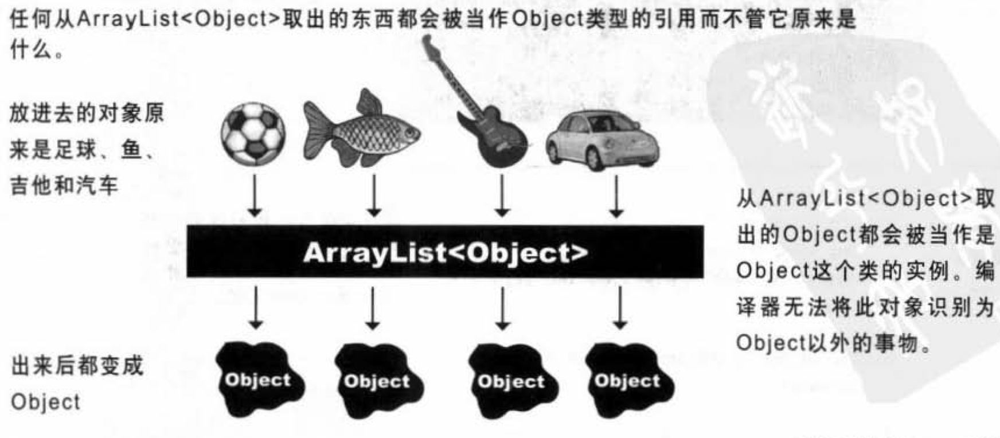
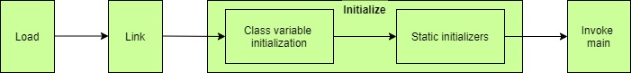
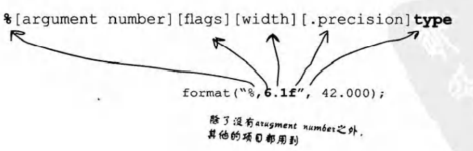

Head First Java
《Head First Java》读书笔记¶
1. 基本概念¶
-
源码
(.java)由javac程序编译后生成代码(.class)，之后启动Java虚拟机(JVM)运行 -
Java中的条件测试必须是Boolean值，不像C++中可以是整形。 -
输出字符串：
1 2 3 4 5 6 7 8 9
public class BasicThree { public static void main(String[] args) { System.out.println(5+6+""+5+6); System.out.println('A'+5+"hello"); } } // 输出： // 1156 // 70hello -
前面是单个字符(byte)的情况下，后面跟数字为加法运算符；
-
在遇到首个个字符之前，所有数遇
+即+（单个字符(byte)的情况除外）；当遇到任意字符后，加号就变成了字符/字符串的拼接。 -
Java是一个强类型语言，没有强制类型转化前,不允许两种不同类型的变量相互操作。 -
动态绑定：
Java允许在执行期引用程序员没有预期到的类型。 -
编译器与虚拟机对比：
编译器 虚拟机 产生.class文件 执行文件 检查数据类型、符号、违法调用private方法等 检查异常
2. 类与对象¶
-
对象被存放在可回收垃圾的堆上
(Gargage-Collectible Heap)。 -
当某个对象被
JVM察觉到不会再被使用，就会被标记为可回收的，当内存不够时，垃圾收集器会启动来清理垃圾、回收空间。 - 任何变量在加上
public、static、final后，会变成全局变量取用的常熟
3. primitive主要数据和引用¶
变量分为两种：¶
-
primitive主要数据类型： -
boolean：true或false char：0~65535byte：-128~128short：-32768~32767int： -2^{31} ~ 2^{31}-1long： -2^{64} ~ 2^{64}-1float：32bit，范围规模可变。注意，float f = 1.2f，要加上f，否则会被认为是double。double：64bit，范围规模可变
小容量可以放进大容量的变量里，反之不行。
-
引用：
-
所有的对象变量都是引用，真正的对象存放在堆中，变量里面存储的是指向对象的地址。
-
对象在内存中的布局依次划分为3个区域：对象头(Header)，实例数据(Instance Data)以及对齐填充(Padding)。对齐填充是为了：使对象的大小必须是8字节的整数倍。
-
所有的引用大小都一样。

数组也是对象：¶
数组里可以放primitive主数据类型，也可以放对象引用。
1 2 3 4 | |
4. 对象的行为¶
参数传递：（实参argument、形参parameter）
Java中的参数传递是值传递，传入的值被修改后不影响原值。若传入的参数是对象，那么实际传入的是“对象的控制”的一份拷贝，修改这个“控制”所指向的对象，也就是直接修改了原来的值。
返回值：
返回的数据类型可以隐含地放大，也可以明确地缩小。
若要返回多个值：
- 同一类型的值：放入数组中返回
- 不同类型的值：使用
ArrayList
封装的意义：
-
将私有成员变量放在方法中赋值，可以为其限定合适的范围，并检查错误的赋值，从而避免参数被误用。
-
一旦这个参数在之后需要被改动，可以直接在方法中改动而不影响其他调用它的代码，否则要改动很多地方。
实例变量的初始化：
即使没有赋值，实例变量也有默认值：
int、char：0float、double：0bool：falsereferences：null
变量的比较：
- 判断
primitive主数据类型是否相等：==(java中没有===号) - 判断对象是否相等：
.equals()
对对象也可以使用==号，不够这个比较的是其引用是否相等，而不是对象的值。
5. 编写程序¶
伪码 -> 测试码 -> 真实代码
一些方法¶
字符串转数字： Integer.parse("12345")
生成0~1之间的随机数： Math.random() ， 返回值为double
前++与后++的区别：¶
j = i++：将i存储到栈中；变量i=i+1；从栈中取出i赋值给jj = ++i：变量i=i+1；将i存储到栈中；从栈中取出i赋值给j
由此可见，自增并非原子操作，底层是由三个步骤组成，因此在多线程中容易出现自增混乱的情况。
解决的方法有：
- 将++i置于同步块中，可以是
synchronized或者J.U.C中的排他锁（如ReentrantLock等）。 - 使用原子性
（Atomic）类替换++i，具体使用哪个类由变量类型决定。如果i是整形，则使用AtomicInteger类，其中的AtomicInteger#addAndGet()就对应着++i语句，不过它是原子性操作。
6. 认识Java的API¶
ArrayList¶
相比数组，大小是动态变化的。但是Java5.0以前其中不能放入primitive的数据。
使用import导包并不会使程序变大或变慢，只是帮忙省下类前过长的包名。
7. 继承与多态¶
覆盖、重写、重载¶
覆盖=重写(override)：子类对父类的方法重新实现。
重载(overload)：函数名必须相同，参数个数、参数类型、是否const等一个或多个不同。注意，与返回值和存储权限无关，只有返回值不同的函数、或者只有存储权限不同的函数不构成重载，但是在已经构成重载的函数中可以任意修改这两种参数。
循环递归问题¶
例：
1 2 3 4 5 6 | |
this需要转变为String，于是又会调用toString()，由于toString()被覆盖了，方法里又使用了this，因此会循环往复地被调用。
这里的this应当被改为super.toString()
防止某个类被继承的方法¶
- 存取控制
- 使用修饰符
final，表示这个类不能再被继承了 - 让类只拥有
private的构造函数
继承的优点¶
- 避免写重复代码
- 便于其他人在不改动源程序的基础上扩展子类
- 当某个看不到源码的父类不够完善时，可以通过继承来扩充和重写它实现的功能
多态¶
- 父类引用可以指向其子类对象
- 父类类型的数组可以存放其任意类型的子类对象
- 父类类型的参数/返回值，可以传入/返回其任意类型的子类对象
Java中的多态指的是运行时的动态行为，没有c++中的静态多态和动态多态一说，因此重载和泛型都不属于多态。
多态重要特征（C++和Java都是）：父类引用指向子类对象时，该对象只能调用父类有的方法。因为编译器是通过引用的类型，来判断对象可以调用哪些方法，而不是对象的类型。
如下：
1 2 3 4 5 6 7 8 9 10 11 12 13 14 15 16 | |
如果一定需要调用，应强制转换成子类类型：
1 2 3 | |
8. 接口与抽象¶
抽象类可以被实例化，只是只能通过多态来实例化
注意：Animal[] animals = new Animal[5]; （Animal是抽象类）是可以的，因为它是保存Animal的数组对象而不是Animal对象。
抽象方法
是为了在实现不了方法内容时，依旧可以定义出一组子类型共同的协议。抽象方法为空，且必须被子类实现。
若类带有抽象方法，自此类必须标识为抽象类。
Object类¶
-
所有类都是Object类的子类
-
Object类并不是抽象类，因为它的实例会用在线程同步化问题上。
-
缺点：当父类类型的容器放入子类对象后，再取出来的对象类型就会变为父类类型，编译器无法识别其原本的类型。
接口¶
例子：可以想想，猫、狗、狮子、老虎继承了Animal类，如果这时候要加上宠物的动作，应该怎么加？
-
在Animal类中加上宠物的动作：这对狮子、老虎是侮辱
-
在猫、狗类中单独加上宠物动作：Animal不再有宠物的动作，每个可以做宠物的动物都得单独实现该动作，抽象性不够好。
-
创建一个宠物抽象类：多重继承会导致致命方块问题（A同时继承了B和C，B和C又同时重写了它们父类的同一个方法，那么A调用该方法时就不确定该调用哪一个版本）。(P233)

解决方法：接口。接口的所有方法都是抽象的，子类必须对其进行实现，因此Java虚拟机就不会搞不清该用哪一个继承版本，直接找到离它最近的方法即可。
优点：
- 解决致命方块的问题
- 不同继承树的类可以继承同一个接口
9. 构造器与垃圾收集器¶
10. 数字与静态¶
静态类不能被创建出实例，静态变量是共享的
静态变量在类被加载时初始化，类一般在实例被创建/静态方法或变量被使用时加载。
（会有默认值：0、0.0、false、null）
静态final常数
初始化后不再改动（必须在声明时或构造函数中被初始化，没有默认值）
如：public static final double PI=3.141592653589793
静态初始化程序(static initializer)
是在类加载时执行的代码，很适合放final变量的初始化：
1 2 3 4 5 6 | |

静态变量在"初始化"阶段初始化，也就是类加载器将类加载到JVM中的时候。
非静态final变量：初始化后值不能变动
final方法：不能被覆盖
final的类：不能被继承
(注意，如果已经标记了类是final的，再单独标记final变量/方法会很多余)
autoboxing
Java5.0之后primitive能自动转换成对象
1 2 3 | |
同理，在形参、返回值、boolean表达式、数值运算、赋值等中也会用到autoboxing
1 2 3 4 5 6 7 8 9 10 11 12 13 14 15 16 17 18 19 20 21 22 | |
数字格式化
-
带逗号输出数字：
String.format("%,d",1000000); //1,000,000 -
日期的格式化：
1 2 3 4 5 6 7 8 9 10 11 12 13 | |
- 其他语法和
C语言一致：

易错点：
- 构造函数不能是静态的：因为构造函数需要取用成员变量，而静态函数不能使用非静态变量；
- 静态方法不能用
this.获取；
11. 异常处理¶
异常
NumberFormatException如：Integer.parseInt("two")NullPointerException：调用/赋值给null的变量MidiUnavailableException：该方法有风险，必须声明调用它有风险
异常是一种Exception类型的对象
处理
1 2 3 4 5 6 7 8 9 10 11 12 13 14 15 16 17 18 19 20 21 22 23 24 25 | |
异常也是对象，因此是多态的。
duck
不处理异常，踢皮球给自己的调用方
1 2 3 4 5 6 7 8 9 10 11 12 13 14 | |
编译时期的异常，必须要处理或者duck掉。运行时异常不用处理，因为一般为代码逻辑错误。
12. 图形用户接口¶
1 2 3 4 5 6 7 | |
绘图的程序应当放在Jpanel的paintComponent()里面
public void paintCompent(Graphics g)，其实是使用了多态传入了Graphics2D的对象，而Graphics2D能做的事比Graphics多很多。因此，可以强制转换成子类类型后能做更多事：渐变颜色、绘制 3D 矩形、旋转等等。
如果，需要用同样的接口实现不同的功能，内部类是唯一解。比如在 GUI 中，有好几个按钮需要监听同一个接口完成不同的事情，就可以定义多个内部类继承这个接口。
13. Swing¶
框架的 BorderLayout 布局管理器需要知道 panel的大小，而 panel 的布局管理器又必须知道其子空间的大小才能确定最终的宽高和位置。
垂直排列布局：BoxLayout
1 2 3 | |
frame 默认使用 BoxLayout，panel 默认使用 FlowLayout
// p429